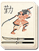
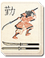

Requires
- Arts:

Enables
- Buildings:

- Arts:

 

Effects
- +1 defence for all units
Description
A successful commander must know the proper times to attack, and when it is prudent to fall back in defence. Every battle ebbs and flows to its own tides: to ignore these signs is to court disaster! Those who read the signs and mount a stout defence at the proper moment will be well placed to unleash a devastating attack. This art will allow all units to better defend themselves when they are required to do so.
Historically, the samurai did not use shields like their European contemporaries, the knights. Instead, they were trained to use their swords as active defensive tools, diverting blows rather than blocking them. The katana was cunningly wrought to have elasticity as well as sharpness, so that it could withstand the shock of deflecting a blow, and then deliver a devastating counterstrike. These ideas were carried over into larger formations. Sun Tzu, the Chinese war master, who was respected by the Japanese wrote that "Invincibility lies in the defence; the possibility of victory in the attack."